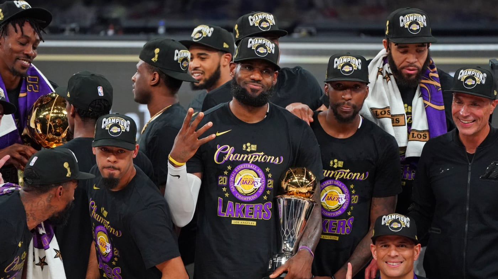

Drafting for the 2021-2022 Fantasy Basketball Season

Below is a basic strategy guide to get you through an Auction Draft for Fantasy Basketball
In order to get ahead, you'll need to figure out a couple of things beforehand...
- Starting Budget
- How Many Keepers?
- Punting Categories
- Your Guys
Once you've figured out these things. It's simple to get through the draft.
- Whether it's $200 or $1000 to start, you'll always want to be aware of the budget so you can grab your first player for around a third of its total value.
- Take into account your keepers next and see how much of your budget is remaining to pick the last 8 guys are so.
- Verify which categories you are weak in and try to draft disregarding those values.
- Last but not least, make sure you are grabbing the players you are most high on! Give yourself more credit than you think!
Home Page